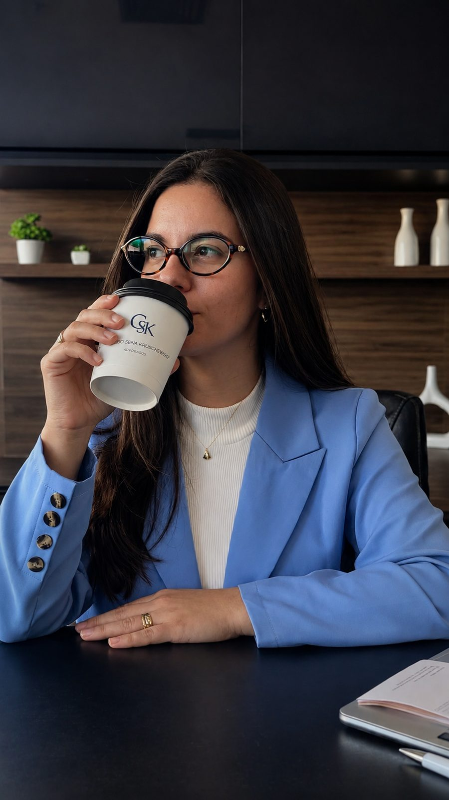

01
Direito Imobiliário e Condominial
↗
Dra. Júlia Kruschewsky
Atua com foco em regularização de imóveis, redução de custos tributários relacionados ao ITBI e assessoria jurídica empresarial. Sua atuação busca proporcionar segurança jurídica e soluções eficientes para questões patrimoniais e empresariais.